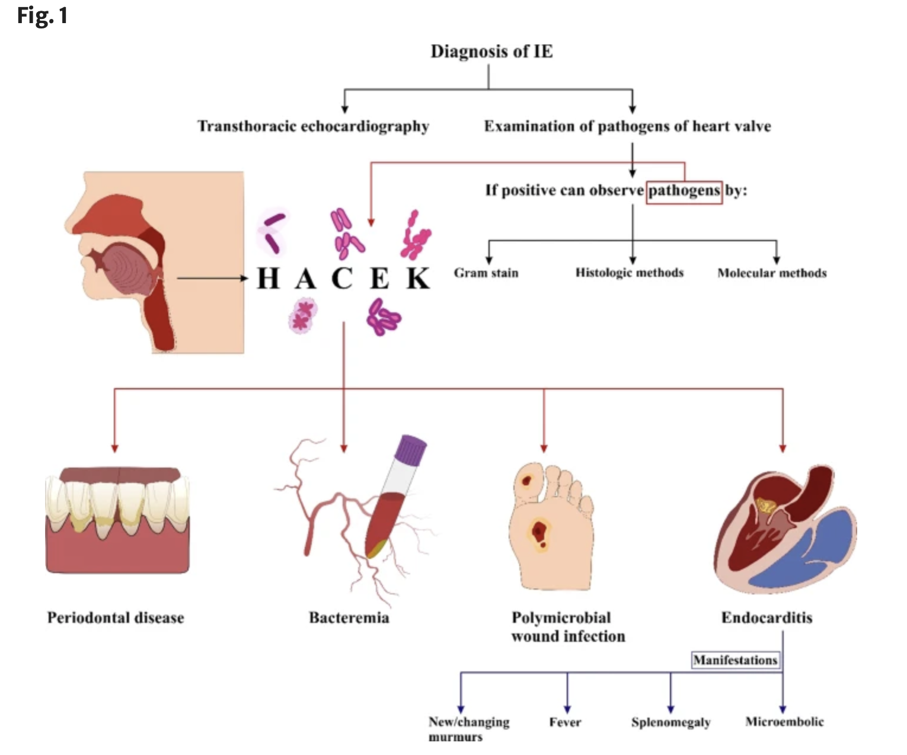
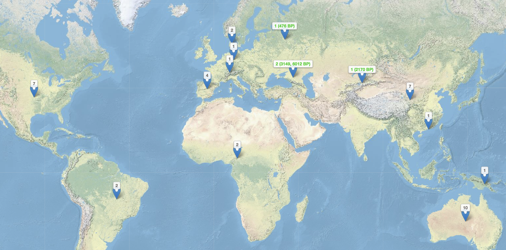
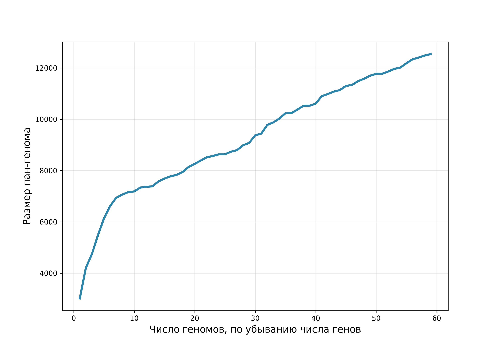
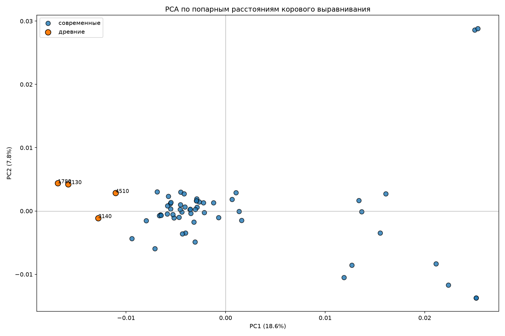
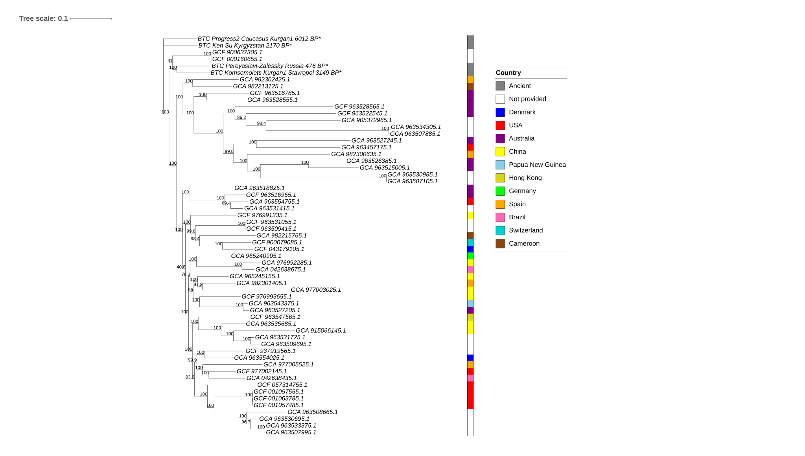
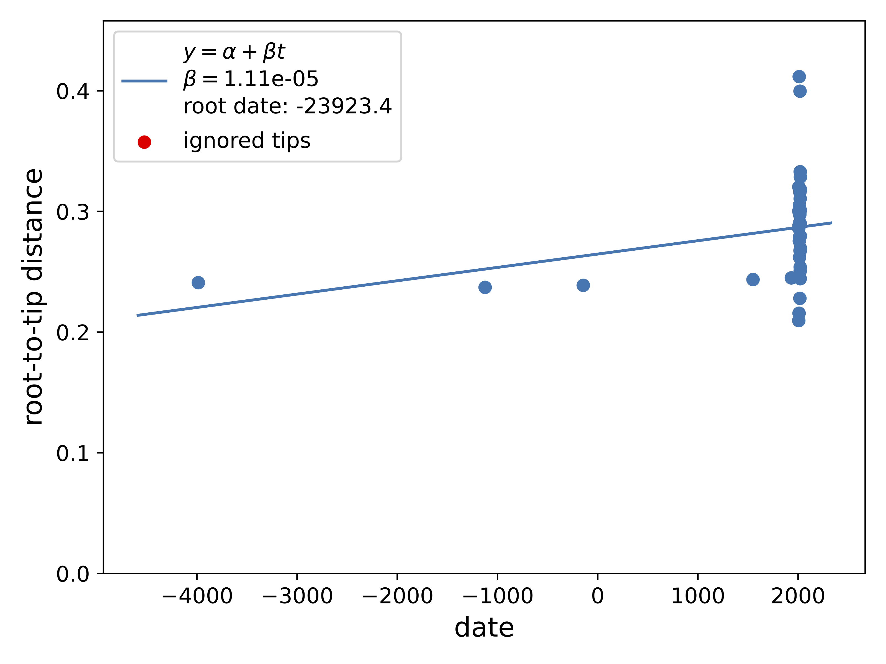
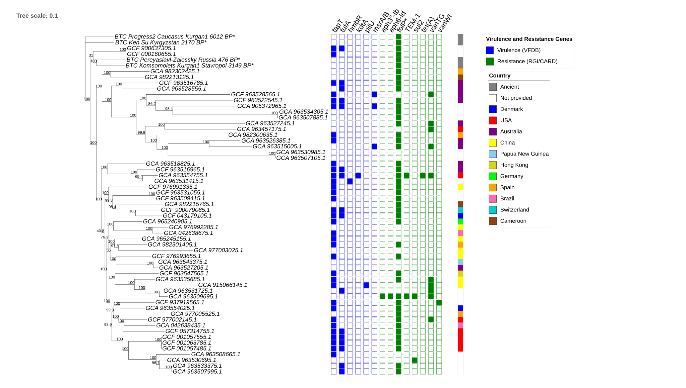

Изучение древних микроорганизмов группы HACEK с точки зрения эволюционной биологии
1 Магистерский диплом 2027
Сравнительный геномный анализ древних и современных штаммов группы HACEK.
Цель работы — сравнительный геномный анализ древних и современных штаммов трёх видов группы HACEK (Cardiobacterium hominis, Eikenella corrodens, Aggregatibacter actinomycetemcomitans.) для оценки их филогенетических связей, наличия временного сигнала и набора генов факторов вирулентности и антибиотикорезистентности.
Задачи:
- Построить ML-филогенетическое дерево по коровому выравниванию для C. hominis, E. corrodens и A. actinomycetemcomitans.
- Проверить наличие сигнала времени в выборке и, при его наличии, построить датированное дерево.
- Выявить гены факторов вирулентности (VFDB) и детерминанты антибиотикорезистентности (CARD/RGI) у исследованных штаммов.
- (Опционально) Провести анализ де-ново сборок, включая изучение рекомбинации и признаков положительного отбора.
В настоящей главе представлены результаты по C. hominis. Анализ E. corrodens и A. actinomycetemcomitans запланирован как продолжение работы.
1.1 Введение
Инфекционный эндокардит (ИЭ) остается тяжелым заболеванием с высокой летальностью, несмотря на значительный прогресс в его диагностике и терапии (Tharsiga et al. 2026). Среди редких возбудителей ИЭ особое место занимают грамотрицательные бактерии группы HACEK (Haemophilus, Aggregatibacter actinomycetemcomitans, Cardiobacterium hominis, Eikenella corrodens и Kingella kingae), входящие в состав нормальной микрофлоры полости рта и верхних дыхательных путей человека (Khaledi et al. 2022; Chambers et al. 2013).
Cardiobacterium hominis известен как возбудитель инфекционного эндокардита с 1962 года (Le Quellec et al. 1994a). Согласно классическим данным Ellner et al., этот микроорганизм обладает «крайне низкой вирулентностью» (ELLNER et al. 1979).
Несмотря на это, он способен вызывать тяжелое поражение эндокарда при наличии фоновой патологии. Как показал недавний обзор 44 клинических случаев, основными предрасполагающими факторами развития инфекции выступают перенесенное протезирование клапанов (57%), стоматологические вмешательства или кариес (20%), а также врожденные аномалии клапанного аппарата (5%) (Ono et al. 2023).
Исторически заболевание ассоциировалось с неблагоприятным прогнозом: в когорте Ellner et al. (до широкого применения эффективной антибактериальной терапии и хирургии клапанов) летальность достигала 26% (ELLNER et al. 1979). Однако внедрение эффективных протоколов лечения кардинально изменило ситуацию: по данным Malani et al. (61 случай), частота выздоровления при поражении ествественных клапанов составила 93%, а при протезном эндокардите — 94%. При этом потребность в замене клапана достигала 45% (27 из 61 случаев) (Malani et al. 2006).
При этом за последние десятилетия существенно изменился возрастной портрет пациента: пик заболеваемости сместился с 45 лет в 1950-х годах до 70 лет в настоящее время, а пожилые люди имеют пятикратно повышенный риск развития ИЭ по сравнению с общей взрослой популяцией (Ursi et al. 2018).
1.1.1 Клинические особенности и диагностика
Для эндокардита, вызванного C. hominis, характерно подострое, медленное и малосимптомное развитие. Длительность симптомов до диагноза: в среднем 138 ± 128 дней (Malani et al. 2006).
Диагностика базируется на сочетании трех ключевых критериев: эхокардиографического исследования, верификации клинических признаков (лихорадка, появление сердечных шумов) и микробиологического выделения возбудителя, часто на фоне заболеваний пародонта или бактериемии (Khaledi et al. 2022).

1.1.2 Эволюция подходов к антибактериальной терапии и профили резистентности
При выборе тактики лечения клиницисты опираются на актуальные национальные и международные стандарты (Kotova and Kobalava 2024).
Российские клинические рекомендации: «Инфекционный эндокардит и инфекция внутрисердечных устройств» (2021 г.).
Европейские рекомендации: «ESC Guidelines for the management of endocarditis» (2023 г.)
Исторически «золотым стандартом» терапии эндокардита, вызванного бактериями группы HACEK, считалась комбинация ампициллина и гентамицина (Calza et al. 2004). Однако появление штаммов C. hominis, продуцирующих β-лактамазы (в частности, типа TEM), потребовало пересмотра этих схем (Le Quellec et al. 1994b; Lu et al. 2000). С середины 2000-х годов препаратами выбора стали цефалоспорины III поколения (преимущественно цефтриаксон): рекомендуемая длительность курса составляет 4 недели при эндокардите естественного клапана и 6 недель — при поражении протеза (Walkty 2005). Актуальность этого подхода подтверждается и современными клиническими наблюдениями: например, в описанном в 2026 году случае эндокардита у 40-летнего пациента без сопутствующей патологии шестинедельный курс цефалоспорина III поколения привел к полному выздоровлению (Tharsiga et al. 2026).
Помимо β-лактамов, в контексте эволюции и эпидемиологии резистентности C. hominis представляют интерес и другие классы антибиотиков, даже если они не входят в первую линию терапии:
- Гликопептиды (ванкомицин): преимущественно применяются против грамположительных кокков и часто назначаются эмпирически до подтверждения возбудителя. Однако еще в 1979 году был описан клинический изолят C. hominis, устойчивый к ванкомицину (МПК 25 мкг/мл) и эритромицину (ELLNER et al. 1979).
- Тетрациклины и сульфаниламиды: не используются в качестве стандартной терапии ИЭ, вызванного HACEK, однако их гены устойчивости широко распространены в микробных сообществах полости рта и служат важными маркерами горизонтального переноса генов.
Учитывая редкость выделения C. hominis в рутинной практике, его геномная структура, эволюционная динамика и скрытый потенциал генов устойчивости остаются недостаточно изученными. Целью данного исследования стал сравнительный геномный анализ современных и древних штаммов C. hominis для оценки структуры их пан-генома, филогеографических связей, а также набора факторов вирулентности и механизмов антибиотикорезистентности.
1.2 Данные
В NCBI 55 современных сборок C. hominis из 11 стран. У 17 страна не указана. Списки accession лежат в главе про метаданные.
| Страна | Сборок |
|---|---|
| Страна не указана | 17 |
| Австралия | 10 |
| Китай | 7 |
| США | 7 |
| Испания | 4 |
| Бразилия | 2 |
| Камерун | 2 |
| Дания | 2 |
| Германия | 1 |
| Гонконг | 1 |
| Папуа — Новая Гвинея | 1 |
| Швейцария | 1 |
Древних образцов четыре. На карте Комсомолец и Прогресс 2 стоят на одной точке, поэтому древних мест три, а образцов четыре.
| Образец | Возраст | Место |
|---|---|---|
| 4510 | 476 л.н. (1500–1600 н.э.) | Переславль-Залесский, Россия |
| 7130 | 3149 л.н. (1240–1007 до н.э.) | Курган Комсомолец 1, Ставропольский край |
| 3140 | 6012 ± 28 л.н. | Прогресс 2, курган 1, Кавказ |
| 1780 | 2170 ± 23 л.н. | Кен-Су, Киргизия |

1.3 Как устроен анализ
Древние консенсусы построены по BAM, уже выровненным на референс C. hominis NCTC10426 (GCF_900637305.1). ANGSD (-doFasta 1) пишет в позицию случайную букву среди оснований с качеством картирования и качеством основания не ниже 20. Порог глубины не задан. Где ридов нет, стоит N. Подробности в главе про консенсусы.
Современные сборки без готового GFF и четыре консенсуса аннотированы Prokka (--kingdom Bacteria). В Roary идут только эти GFF: файлы NCBI ему не подходят. См. аннотацию.
Roary кластеризует белки при идентичности 80% (-i 80) и считает коровым ген, который есть минимум у 80% штаммов (-cd 80). Получилось 451 коровых генов из 12 541. См. пан-геном.
В коровом выравнивании 343 520 сайта и ни одной колонки без пропуска, поэтому snp-sites -c пуст. В дерево взят файл ClipKIT kpi-smart-gap: 39 954 информативных сайта. См. отбор сайтов.
IQ-TREE: GTR+F+ASC+G4, 1000 ультрабыстрых бутстрепов и 1000 SH-aLRT, без аутгруппы. Поправка +ASC стоит потому, что константных сайтов в выравнивании нет. См. ML-дерево.
Сигнал времени проверяет TreeTime (--reroot least-squares). Дата известна у 35 из 59 листьев. См. сигнал времени.
Гены вирулентности ищет ABRicate по VFDB, гены устойчивости — RGI по CARD, только попадания Perfect и Strict. См. главу про гены.
1.4 Результаты
1.4.1 Пан-геном

Коровых генов 451 из 12 541. Пан-геном открытый.

1.4.2 ML-дерево


1.4.3 Сигнал времени

r² = 0,08. Датированное дерево по этой выборке не строится. Дальше штаммы сравниваются по присутствию и отсутствию генов патогенности и антибиотикорезистентности.
1.4.4 Гены вирулентности
При обычном пороге ABRicate VFDB не находит ничего. При 70% идентичности и 70% покрытия находятся шесть гомологов: tapT (34 образца), tufA (16), msrA/B (3), hmbR, kdtA/waaA и pilU (по одному). Это гены адгезии, стресса и оболочки, не токсины. У древних консенсусов нет ни одного из них. Так результат стыкуется с описанием «крайне низкой вирулентности» вида (ELLNER et al. 1979).
1.4.5 Гены устойчивости
RGI (CARD, Perfect и Strict) находит восемь генов разных классов:
- сульфаниламиды: folP с заменами у 45 образцов, в том числе у всех четырёх древних; и sul2 у двух современных образцов;
- гликопептиды: vanT кластера vanG у 10 образцов и vanW кластера vanI у одного;
- β-лактамы: TEM-1 у двух;
- аминогликозиды: APH(3’’)-Ib и APH(6)-Id у одного;
- тетрациклины: tet(A) у одного.
У GCA_963509695.1 сразу четыре класса: аминогликозиды, TEM-1, сульфаниламиды и vanT. У GCA_963554755.1 есть tet(A).
vanT кодирует серин-рацемазу и сам по себе не означает устойчивость к ванкомицину: для кластера нужны и остальные компоненты, включая VanG и VanXY.
Ванкомицин и тетрациклин не входят в первую линию терапии C. hominis, так что эти находки не меняют клинические рекомендации. Они описывают, какие гены устойчивости у вида уже есть.

1.4.6 Сводка
Пан-геном C. hominis открытый: 451 коровый ген из 12 541. Древние образцы смещены относительно современных и на PCA, и на ML-дереве. Временного сигнала нет, r² = 0,08.
При стандартном пороге факторов вирулентности нет. При пороге 70% шесть гомологов находятся только у современных сборок. Картина устойчивости мозаичная. Общий для древних образцов сигнал — folP. Отдельно выделяются GCA_963509695.1 и GCA_963554755.1.